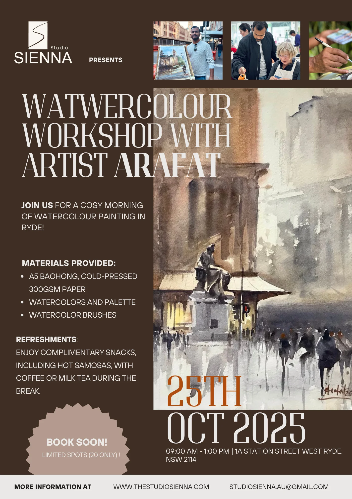
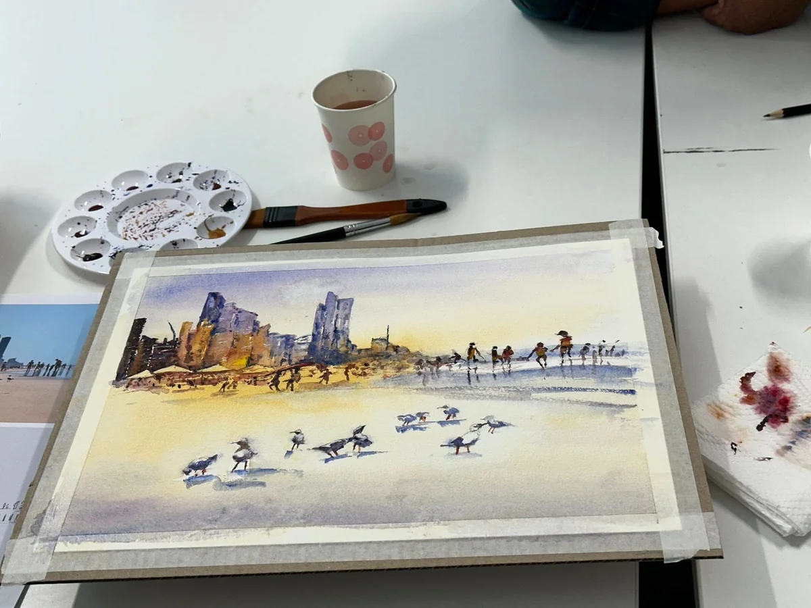
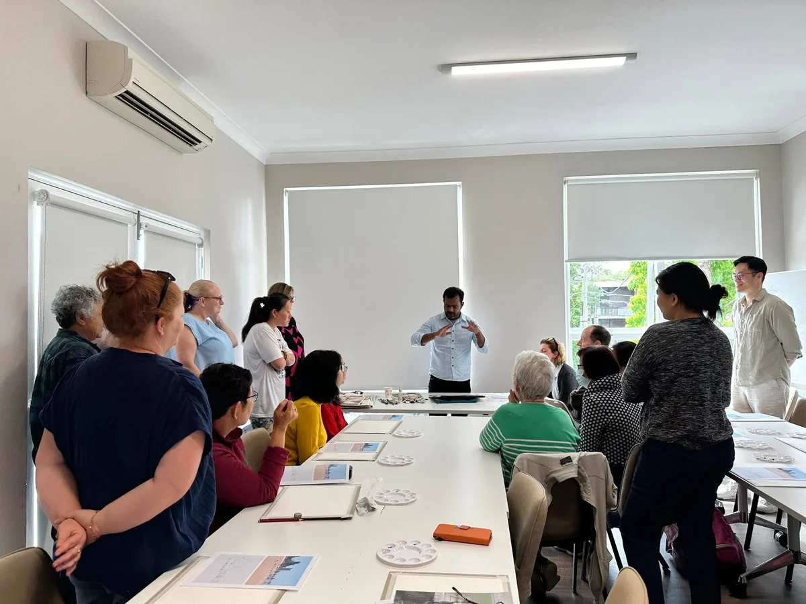
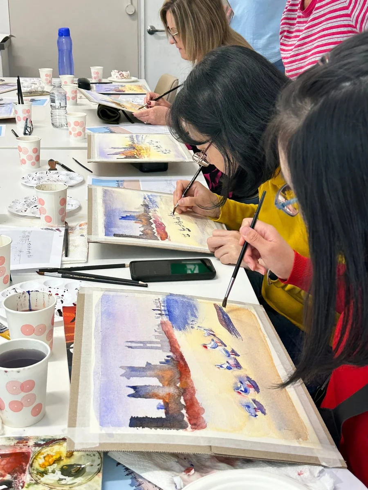
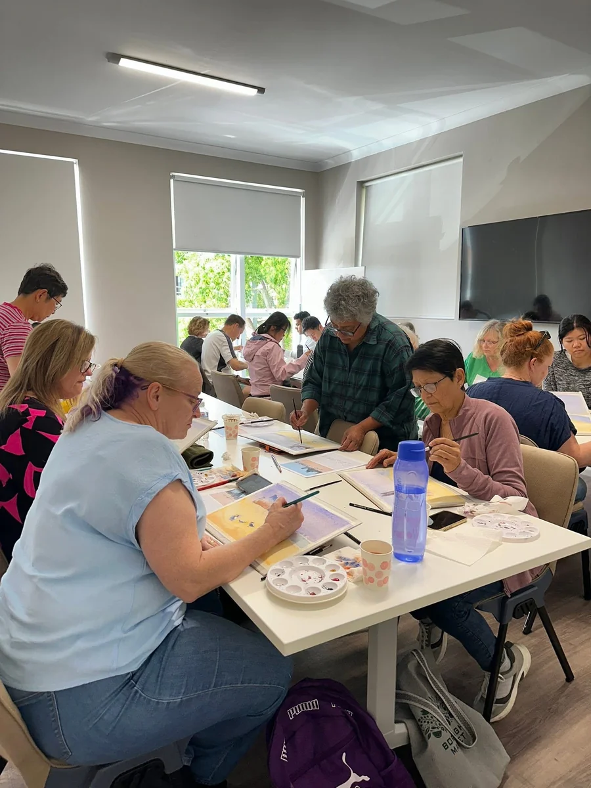
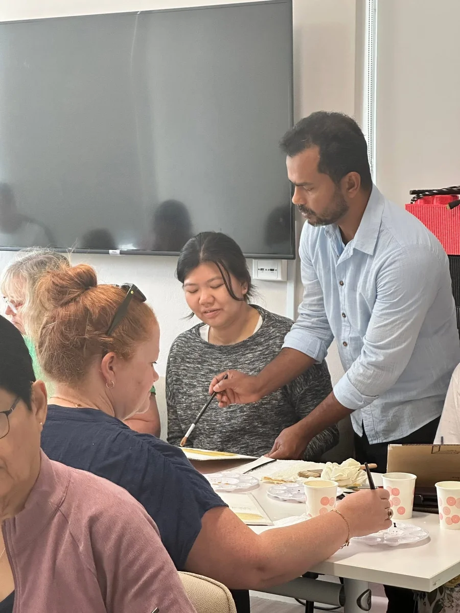

Programme story
Watercolour Workshop with Artist Arafat

Purpose
The programme was created as a small-group watercolour experience, giving participants the opportunity to learn directly from a practising artist while spending time making, observing and connecting through art.
People
Presented by Sienna Arts.
Led by Arafat Hosen, Artist & Creative Educator.
Attended by participating members of the local community.
Process
The morning opened with an artist-led watercolour demonstration, followed by guided painting practice with individual guidance throughout.
Materials were provided, and the session paused for refreshments and conversation before participants returned to their work.
What we learned
The session confirmed that a small group, generous time and materials provided on the table allow people with no painting background to take part comfortably. That format now shapes how Sienna Arts plans its creative-learning experiences.
Gallery




